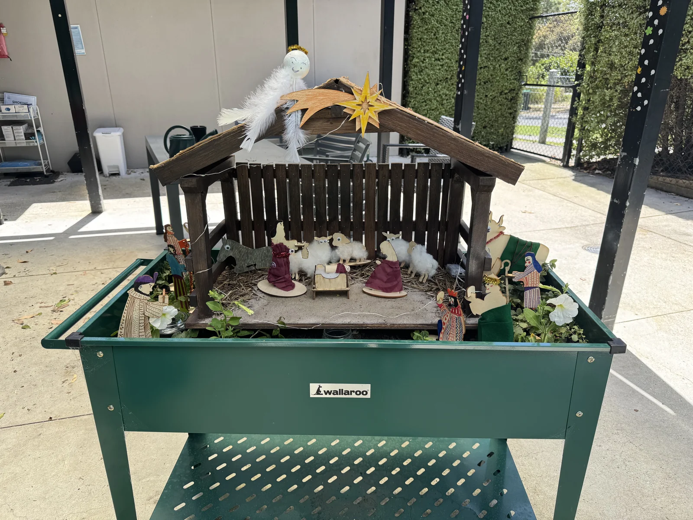
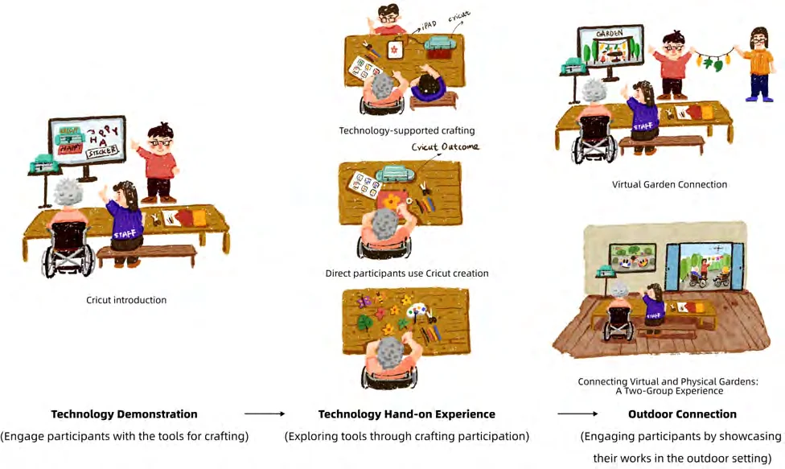
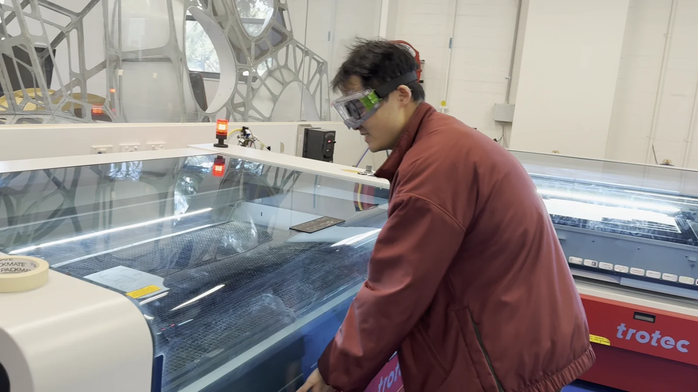
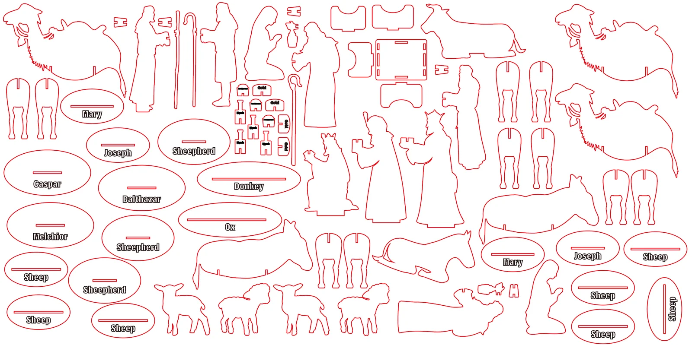
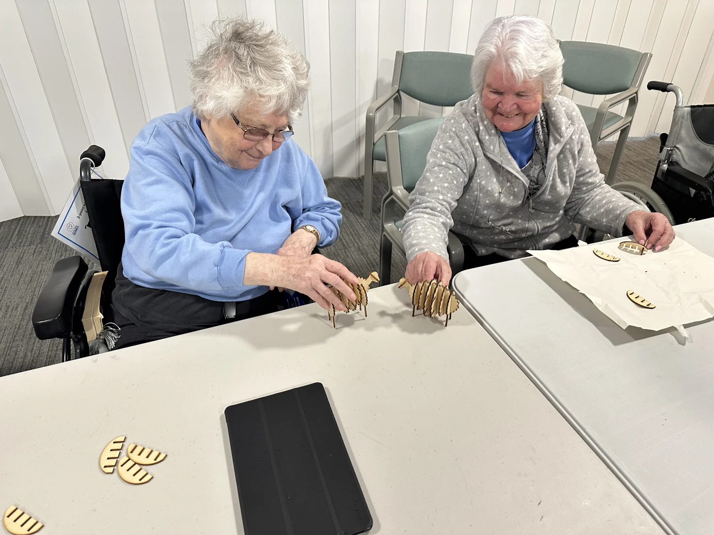

Making
together.
Exploring how shared crafting can connect indoor activities with outdoor places, and make personal contributions visible.
{kind=link}

An invitation to make.
Crafting offered a way to begin with familiar interests and tangible materials. Residents and staff took part in making nature-inspired decorations and figures, with the possibility of displaying contributions outdoors.
The research explored how digital fabrication tools, including a Cricut and laser cutting, could help prepare materials for shared making. The design work involved both preparing the activity and adapting it to the people taking part.
{kind=link}

Before the workshop.
I prepared the making activities by testing paper shapes with the Cricut and developing wooden parts for laser cutting. At the university makerspace, the designs moved from Adobe Illustrator files to physical pieces that could be handled, assembled, and decorated.
{kind=link}

I also recorded the laser-cutting process and shared it during the workshops, so participants could see how the materials were made.
{kind=link}

Make the material easier to enter.
Early Nativity models involved multiple interlocking pieces. Handling and fitting these parts could make assembly difficult. Staff suggestions and observations during sessions informed a simpler approach.
{kind=link}

The sheep was simplified to a body shape and two leg pieces. Other figures used an outline and a base. This shifted attention toward decorating and personalising the objects.
Reducing assembly demands did not mean deciding the decoration for participants. It created more room for different choices of colour, texture, and character.
Let contributions travel outdoors.
Crafted objects became part of garden-bed displays. The outdoor setting offered a place to encounter the results of earlier making and to share them with other people.
This raised questions about visibility and recognition: where should a contribution be placed, how can someone see it, and what makes a display worth returning to?
The relationship between making an object and later encountering it matters. Materials, placement, and staff collaboration all shape that connection.
What this opened up.
The crafting study drew attention to material accessibility, staff collaboration, and the value of keeping contributions visible. The gardening study then explored participation through living plants, care, and change over time.